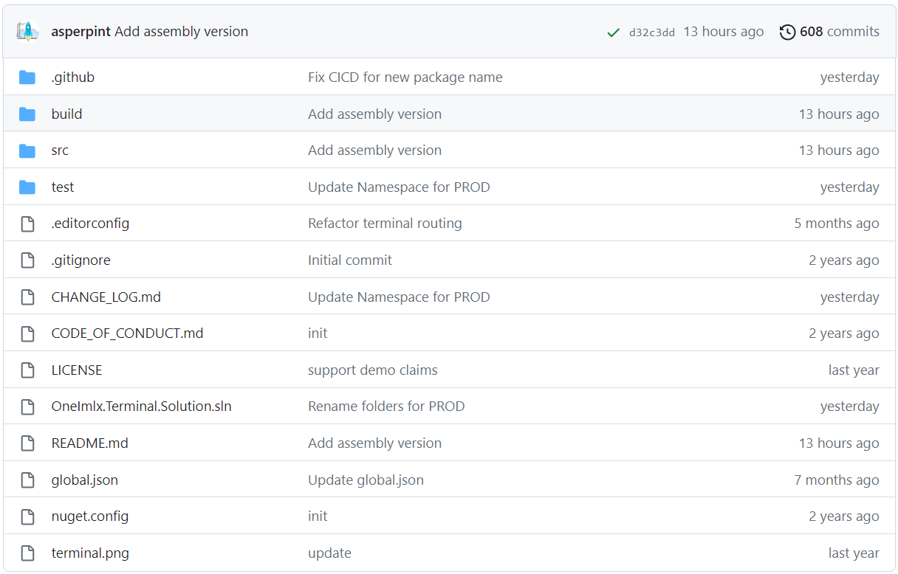

Terminal Framework
OneImlx.Terminal is a cross-platform, adaptable framework designed for developing modern and secured terminal applications. It simplifies terminal infrastructure complexity, enabling developers to focus on building enterprise-grade terminal applications with Unicode support and extensive command hierarchies.
- Utilize micro services architecture, Dependency Injection (DI), and options pattern to design and configure your terminal apps.
- Access built-in features or develop custom solutions for terminal UX, runtime, parsing, routing, error handling, command validation, and storage.
- Choose in-memory command storage or integrate with your custom storage solutions.
- Create platform and deployment agnostic terminals, servers, and custom applications for on-premise, cloud, hybrid, highly-secured OSAT, or factory environments.
- Integrate with OAuth and OpenID Connect (OIDC) authentication providers
- Engage with our team on GitHub for support and feature enhancements.
- Quickly on-board with our demo license and GitHub samples, no payment required.
Easily transform any .NET ecosystem feature into a modern Unicode terminal app.
Open Source
The terminal framework is open-source hosted on GitHub, encouraging community collaboration and feedback.

Our DevOps builds the framework with hosted runners for various OS platforms, supporting platforms compatible with .NET.
Access licensed packages via NuGet:


Samples
Browse our GitHub samples to explore various applications build using the OneImlx.Terminal framework.
- Standalone terminal application
- Modern command-line interfaces (CLI) similar to
dotnet CLI,GitHub CLI,Stripe CLI, etc. - Server-based terminal applications for managing service-to-service communications, enhancing connectivity and functionality between different services
- IoT Terminal Applications for managing and communicating with IoT devices
Integration
The OneImlx.Terminal framework separates the terminal's backend logic from the frontend, making it ideal for building terminal applications, servers, and command-line interfaces.
Enhanced Integration with .NET Ecosystem
OneImlx.Terminal ensures seamless integration with the .NET stack, streamlining the development and deployment.
Console
Enhance console applications with advanced command routing and execution capabilities by integrating the OneImlx.Terminal framework.
Custom UX
Utilize ASP.NET Core, Blazor, and Blazor WebAssembly (WASM) with OneImlx.Terminal to craft custom, responsive terminal user interfaces.
The framework, acting as a comprehensive terminal parsing and execution engine, allows developers to create dynamic UX for server-side and client-side terminal applications. It handles complex command executions efficiently and adapts to various .NET frameworks, supporting flexible command execution syntax for sophisticated, secure terminal applications.
Backend
Use the OneImlx.Terminal framework to develop server applications capable of managing complex client-server and service-to-service communications using TCP, UDP, or custom routers. This setup enables robust and scalable communication solutions tailored to your specific infrastructure needs.
It also enables developers and product owners to expose complex APIs as simple command strings with arguments and options, facilitating the creation of products as CLI apps, diagnostic tools, and administrative interfaces.
On-Premise
OneImlx.Terminal excels in on-premise server applications, aligning with internal policies and infrastructure. It offers tools and flexibility for managing and deploying terminal applications in secure, zero-trust, and controlled environments.
Other Integrations
Develop various frontend terminal applications using technologies like React, Vue.js, Electron, or MAUI, communicating with a .NET-based terminal server for command processing and execution.
Web and Cloud Native
Create web and cloud native terminal applications using JavaScript frameworks, interacting with a .NET-based terminal server for command execution.
Other Languages
Build terminal applications in Python, Java, or other languages, integrating with the .NET-based terminal server for robust command execution.
Note:
OneImlx.Terminalcurrently supports TCP/IP, UDP, and custom routers. Future plans include adding support for gRPC and HTTP.
Deployment
Deploy the terminal server and apps as needed:
- On-Premise: Maintain full control and comply with internal policies.
- Cloud: Leverage cloud infrastructure.
- Containerized Environments: Simplify deployment and scaling.
Feedback
Submit issues or feature requests directly on GitHub.